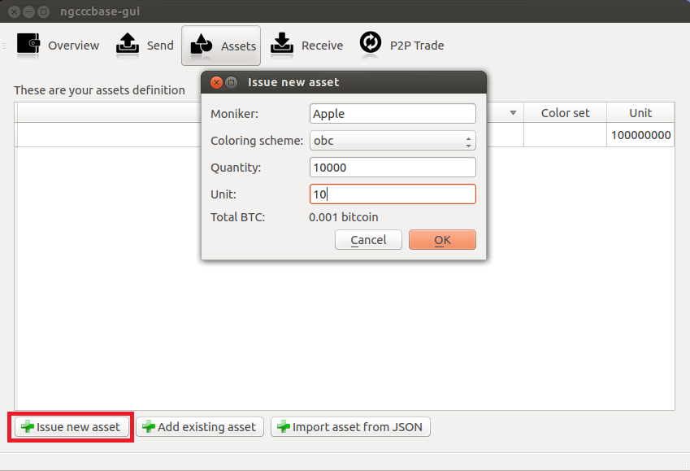
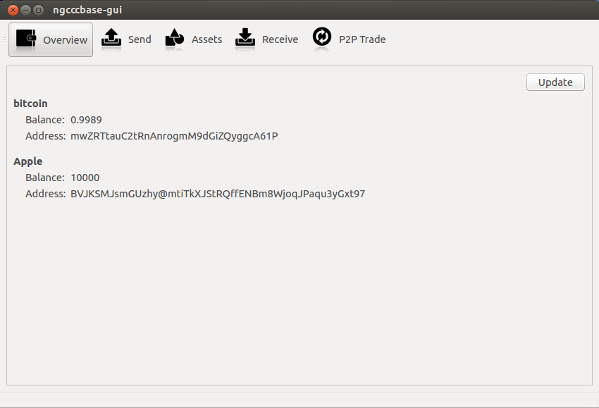
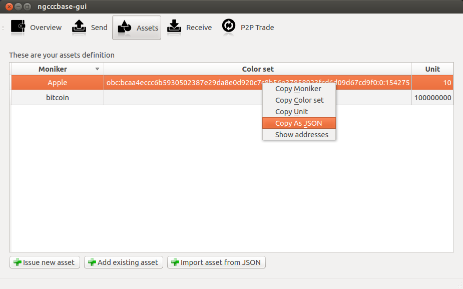
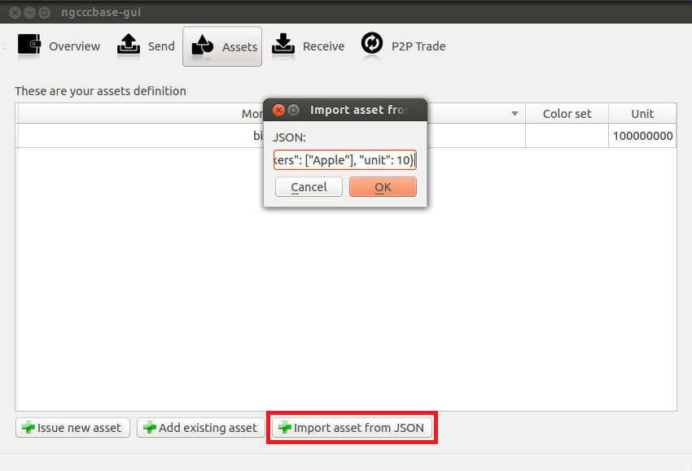
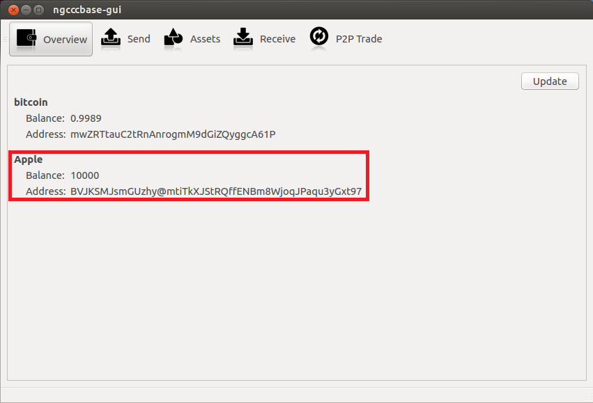

ChromaWallet user's guide
Table of contents
- Installation
- Asset Management
- Sending and Receiving Assets
- P2P Trade
Installation
Windows
- Download and install the latest bitcoin-qt client from here.
- Navigate to your %APPDATA%\Bitcoin directory.
- Create a text file entitled bitcoin.conf. In this file, place the following text, substituting a password of your choosing in the rpcpassword field.
server=1
rpcuser=rpcuser
rpcpassword=yourpassword
- Open a command window and navigate to your Bitcoin installation directory.
- Setup bitcoin-qt to run on the testnet with txindex enabled with the following command and wait while it downloads blocks:
bitcoin-qt.exe -testnet -txindex
(Alternatively, run bitcoind.exe with same options.)
Note: If you previously ran either bitcoin-qt of bitcoind without the txindex flag, you need to use the -reindex option (one time only).
- Download the latest Windows version of ChromaWallet from here, extract it to a location of your
choosing. Run
ngccc-gui if you want graphical user interface.
Alternatively, you can use the command-line version: ngccc-cli. Run ngccc-cli --help to get a list of commands it supports.
Linux
- Download and install the latest bitcoin-qt executable file from here, or via your package manager.
- Navigate to your ~/.bitcoin/ directory, and create a text file entitled bitcoin.conf. In this file, place the following text, substituting a password of your choosing, in the rpcpassword field.
server=1
rpcuser=rpcuser
rpcpassword=yourpassword
- Setup bitcoin-qt to run on the testnet with the following command and wait for it to download blocks:
bitcoin-qt -testnet -txindex
(Alternatively, run bitcoind with same options.)
Note: If you previously ran either bitcoin-qt of bitcoind without the txindex flag, you need to use the -reindex option (one time only).
- Download the latest Linux version of ChromaWallet from here, extract it to a location of your
choice. You can use either GUI version:
ngccc-gui, or command-line: ngccc-cli. Run ngccc-cli --help to get a list of commands.
Running Multiple Clients on One Machine
- You can run as many clients as you want, to do this you will simply need to copy the ngccc directory, delete the wallet.db in the copied directory, and then run ngccc-cli or ngccc-gui from the new directory. A new wallet will be created.
- You can now send bitcoins and assets between the two wallets.
Asset Management
Issuing an Asset
Note: you need testnet bitcoins in your wallet to be able to issue an asset. You can obtain some from a faucet.
- Click on the Assets tab, and then click on the issue new asset button.

- Enter a moniker (name of the asset) of your choosing, select a color scheme (currently only OBC is available), quantity, and number of satoshis in one unit (10000 is recommended for OBC) and then click OK.
- The asset should appear in your asset tab. If you go to the overview tab, your asset should be listed along with its balance and address. Note, you may have to restart the client for the balance to update.

Publishing the Asset you Created
You need to share information about the asset you have created (
asset definition) with others if you want them to be able to interact with it.
- Go to Assets tab.
- Right-click the asset you want to share and select Copy as JSON

- Now you can paste this JSON asset definition into a document, web page or forum post you will use to announce and describe the asset.
- Optional: If asset represents something of value (for example, if it is a bond, i.e. a debt you agree to repay at some point), you should write a contract which describes terms associated with this asset (for example, details about issuer, conditions of repayment and so on), add asset definition to it, and sign it by some means, for example, using PGP. Signature will be used to check the identity of issuer. (Note: We do not know anything about legality of bonds created by this method, please consult your lawyer.)
(Alternatively you can copy individual parts of asset definition: name, color set (color identifiers), unit (number of satoshi in one unit).
Adding an Existing Asset
Method One: Import Asset via JSON (Recommended)
If you have access to asset definition in JSON format (it might be obtained from asset's description, contract, or from other client running on same machine), you can:
- Copy JSON asset definition
- In the client that you wish to contain this new asset, open Assets tab, and then click on the Import asset from JSON button.
- Paste the JSON that you previously copied, and then click OK.

- You will see details of the asset you're about to add. Please make sure that its name matches your expectations. You can edit name if you wish.
- After you click OK the asset should appear in your Assets tab and in your Overview tab.

Method Two: Manual entry
- Open Assets tab, and then click on the add existing asset button.
- Enter the moniker, color description, and unit of the asset you want add.
- After you click OK the asset should appear in your Assets tab and in your Overview tab.
Sending and Receiving assets
- You need to make sure that asset definition is known to your wallet before you can send/receive units of that asset. If you aren't an issuer, please consult asset management section.
- The process is very similar to sending and receiving bitcoins, but special color addresses are used for that. Color address for each asset wallet is aware of is available on Overview tab. Receive tab provides a list of all addresses for each asset and gives you an ability to create new ones
- You can send a specific asset by choosing it in a drop-down list on the Send tab.
Note: that you need to obtain address for this specific asset, wallet will report an error if color of an address doesn't match the asset name you have chosen in the drop-down menu.
Note: You need testnet bitcoins to pay a transaction fee. You can obtain some from a faucet.
P2P Trade
- Click on the P2P Trade Tab.
- Select the asset you wish to buy or sell.
- Enter the quantity and price of the asset you wish to buy or sell, and then click the buy or sell button.
- When matching offer will be found, a trade will occur. Note that offers need to match price and quantity exactly. (More advanced matchmaking engine is currently under development.)
- To fill a specific offer, double-click it.
- To delete your order (distinguished by dark grey in the list), double-click it.